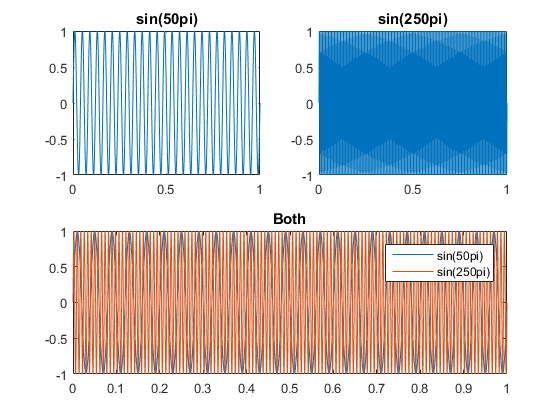
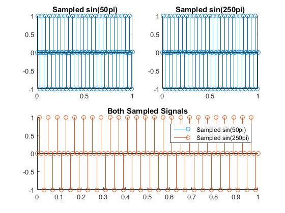
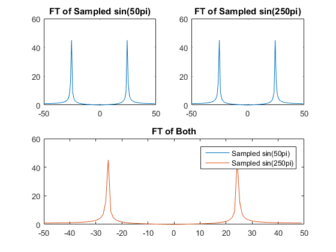

H1.1 Parts C and D
Contents
Reset the enviroment
clear all; close all;
Set up time and signals.
t=0:0.0001:1; y = sin(25 * 2 * pi * t); y2 = sin(125 * 2 * pi * t);
Down Sample it
y_s = y(1:100:end); y2_s = y2(1:100:end); t_s = t(1:100:end);
Plot the two originally
figure; subplot(2,2,1) plot(t, y) title('sin(50pi)') subplot(2,2,2) plot(t, y2) title('sin(250pi)') subplot(2,2,[3,4]) plot(t, y, t, y2); title('Both') legend('sin(50pi)','sin(250pi)');
Plot the sampled ones
figure; subplot(2,2,1) stem(t_s,y_s); title('Sampled sin(50pi)') subplot(2,2,2) stem(t_s,y2_s); title('Sampled sin(250pi)') subplot(2,2,[3,4]) hold on; stem(t_s,y_s); stem(t_s,y2_s); title('Both Sampled Signals') legend('Sampled sin(50pi)','Sampled sin(250pi)'); hold off;
Fourier Transform
ys_ft = fftshift(fft(y_s)); y2s_ft = fftshift(fft(y2_s)); n = length(y_s); f = (-n/2:n/2-1)*(100/n); figure; subplot(2,2,1) plot(f, abs(ys_ft)) title('FT of Sampled sin(50pi)') subplot(2,2,2) plot(f, abs(y2s_ft)) title('FT of Sampled sin(250pi)') subplot(2,2,[3,4]) plot(f, abs(ys_ft),f, abs(y2s_ft)); title('FT of Both') legend('Sampled sin(50pi)','Sampled sin(250pi)');